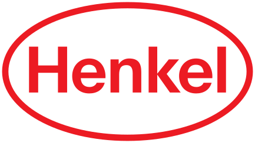
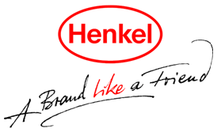
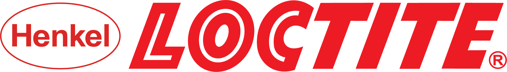

헨켈 Henkel
헨켈(Henkel)은 1876년 독일에서 설립된 생활화학·접착기술 분야의 다국적 소비재 대기업이다.
최종 업데이트

헨켈은 어떤 브랜드인가
헨켈은 1876년 독일 아헨에서 프리츠 헨켈이 두 동업자와 함께 규산소다 기반 세제 공장으로 시작한 화학·소비재 기업이다. 1878년 단독 경영권을 확보하며 본사를 뒤셀도르프로 옮긴 것과 1907년 페르실 출시로 브랜드 세제 시대를 연 것이 초기 두 전환점이었다.
오늘날 접착제 테크놀로지와 소비재 두 축으로 약 150개국에서 사업을 펼치며, 2024년 매출은 약 216억 유로, 2025년에는 약 205억 유로 규모에 이른다.
헨켈은 어떻게 봐야 할까
헨켈의 핵심 차별점은 한 회사 안에 산업용 접착제 세계 1위와 글로벌 소비재 사업을 동시에 보유한 이중 구조다. P&G·유니레버·로레알이 세제와 헤어케어에서 정면으로 맞서지만, 헨켈은 13퍼센트가 넘는 점유율로 누구도 쉽게 따라오기 어려운 접착제 시장 지배력을 안정적 수익 기반으로 삼는다.
3M·시카가 특수 테이프와 건설용 화학에서 경쟁하나 접착제 전반의 통합도에서는 헨켈이 앞선다. 2023년 세탁·홈케어와 뷰티케어를 소비재 단일 부문으로 합치고 러시아 사업을 정리했으며, 효율화와 구조조정 2단계로 수익성을 끌어올리는 중이다.
2025년 조정 영업이익률은 14.8퍼센트로 개선됐다. 한국에서는 1989년 진출 이후 산업용 접착제와 가정용 살충제·세제·헤어케어를 함께 전개하며 B2B와 일반 소비 양쪽을 동시에 공략한다.
헨켈은 어떻게 시작되고 성장했나
19세기 후반 독일은 산업화가 본격화되며 위생과 가사 노동 경감에 대한 수요가 커지던 시기였다. 1876년 프리츠 헨켈은 아헨에서 동업자들과 함께 규산소다를 원료로 한 만능 세제를 내놓으며 사업을 시작했다.
1878년 그는 동업 관계를 정리하고 독일 최초의 상표 세제로 평가받는 표백 소다를 선보였으며, 같은 시기 본사를 물류와 확장에 유리한 뒤셀도르프로 이전했다. 1907년에는 자동 표백 세제 페르실을 출시해 가정 세탁 방식을 바꿨고, 같은 해 상징인 붉은 타원이 등장해 1920년 사명이 그 안에 새겨졌다.
이후 1923년 접착제 사업에 진출했고, 1995년 슈바르츠코프, 1996년 록타이트, 2004년 다이알, 2008년 내셔널 스타치를 인수하며 헤어케어와 산업용 접착제 영역의 국제 확장을 가속했다. 한국에는 1989년 정식 진출했다.
헨켈의 브랜드 아이덴티티는 무엇인가
헨켈의 정체성은 품질과 신뢰, 지속가능성, 그리고 가족 기업다운 장기적 책임감에 뿌리를 둔다. 시각적으로는 1907년 등장한 붉은 타원이 100년 넘게 핵심 상징으로 이어져 왔으며, 붉은색과 흰색이 디자인의 기반을 이룬다.
타원의 수평 형태는 안정과 성장을, 강렬한 색은 진취성을 드러낸다. 2022년에는 기업 브랜드 정체성을 정비해 두 사업 축을 아우르는 통합된 인상을 강화했다.
대상은 일반 가정 소비자부터 자동차·전자·항공 등 산업 고객과 전문 기능공까지 폭넓으며, 메시지는 과장보다 성능과 혁신, 친환경 약속을 담담히 전하는 신뢰 중심의 어조를 택한다. 2030년 기후중립 목표가 이런 방향성을 뒷받침한다.
헨켈의 대표 제품과 서비스는 무엇인가
사업은 접착제 테크놀로지와 소비재 두 부문으로 나뉜다. 접착제 부문은 130여 개국에서 판매되는 세계 1위 브랜드 록타이트를 비롯해 산업용 접착제·실란트·기능성 코팅을 공급한다.
소비재 부문은 독일 인지도가 100퍼센트에 가까운 세탁 세제 페르실, 헤어케어 슈바르츠코프, 식기세제 프릴, 그리고 파·프릿·다이알 등을 거느린다. 판매 경로는 산업 고객 대상 B2B 직거래와 대형마트·드러그스토어·온라인을 아우르는 일반 소비 유통으로 이원화돼 있다.
헨켈은 누가 만들고 이끌었나
창업자: 프리츠 헨켈(Fritz Henkel)이 1876년 창업했다. 소유: 독립 상장사(헨켈 AG & Co.
KGaA, DAX), 헨켈 가문이 지배한다.
헨켈은 지금 어떤 상태인가
본사는 독일 뒤셀도르프에 있다. 지배구조는 주식합자회사 형태로, 5세대에 걸친 창업가 일가가 160명이 넘는 가족 주주를 통해 의결권 다수를 유지하며 경영을 통제한다.
경영이사회 의장은 카르스텐 크노벨이다. 임직원은 약 4만 7천 명으로 80퍼센트 이상이 독일 밖에서 근무한다.
매출은 2024년 약 216억 유로, 2025년 약 205억 유로이며, 2025년 조정 영업이익률은 14.8퍼센트다.
헨켈 연혁 — 주요 사건은 언제였나
헨켈 로고는 어떻게 변해왔나
대표 로고대표 브랜드 마크
BI/CI 아카이브보관 이미지 1
BI/CI 아카이브 2보관 이미지 2
BI/CI 아카이브 4보관 이미지 4자주 묻는 질문
헨켈는 어느 나라 브랜드인가요?
헨켈는 독일의 브랜드·비즈니스 브랜드입니다.
헨켈는 언제 설립되었나요?
헨켈는 1876년 설립되었습니다.
헨켈의 브랜드 아이덴티티는 무엇인가요?
헨켈의 정체성은 품질과 신뢰, 지속가능성, 그리고 가족 기업다운 장기적 책임감에 뿌리를 둔다.
헨켈의 대표 제품은 무엇인가요?
사업은 접착제 테크놀로지와 소비재 두 부문으로 나뉜다.
헨켈의 본사는 어디에 있나요?
본사는 독일 뒤셀도르프에 있다.
헨켈의 창업자는 누구인가요?
헨켈의 창업자는 Fritz Henkel입니다(위키데이터 기준).
헨켈의 공식 웹사이트는 어디인가요?
헨켈의 공식 웹사이트는 https://www.henkel.com/ 입니다.
출처와 검증
헨켈 관련 참고: 공식 웹사이트 · 위키데이터 Q276507 · 한국어 위키백과 · 영어 위키백과. 브랜드명은 한글과 원어를 함께 표기하되 데이터에 없는 표기는 만들지 않습니다. 기원 국가·설립연도는 검수된 정의문에서 확인된 값을 우선하고, 없을 때만 공식 웹사이트 URL이 일치하는 위키데이터 개체의 값을 씁니다. 위키데이터 값은 2026-09-07 기준입니다.